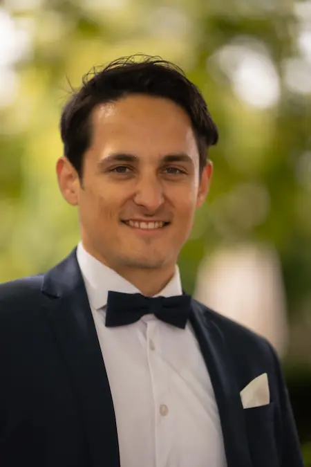
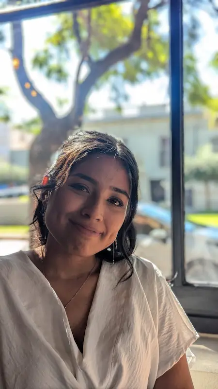

Amoung Us
History


Hi! We are Fernando and Margarita, a recently married couple. Margarita is from Argentina, and Fernando is from Germany (from this region). We created this page with the intention of finding a place of belonging among those recently arrived in Germany who are Spanish speakers, with the intention of exchanging customs, getting to know the Latinos of this region, and helping each other with adaptation—and, who knows, with German bureaucracy, too.
Some Recommendations to Visit